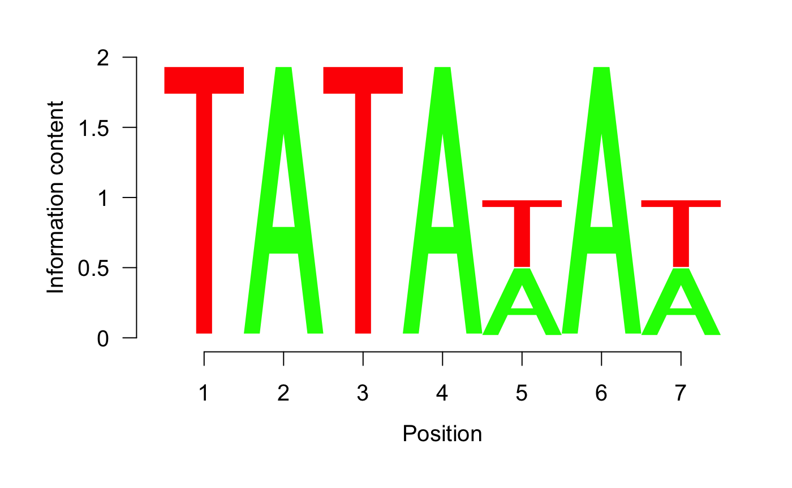
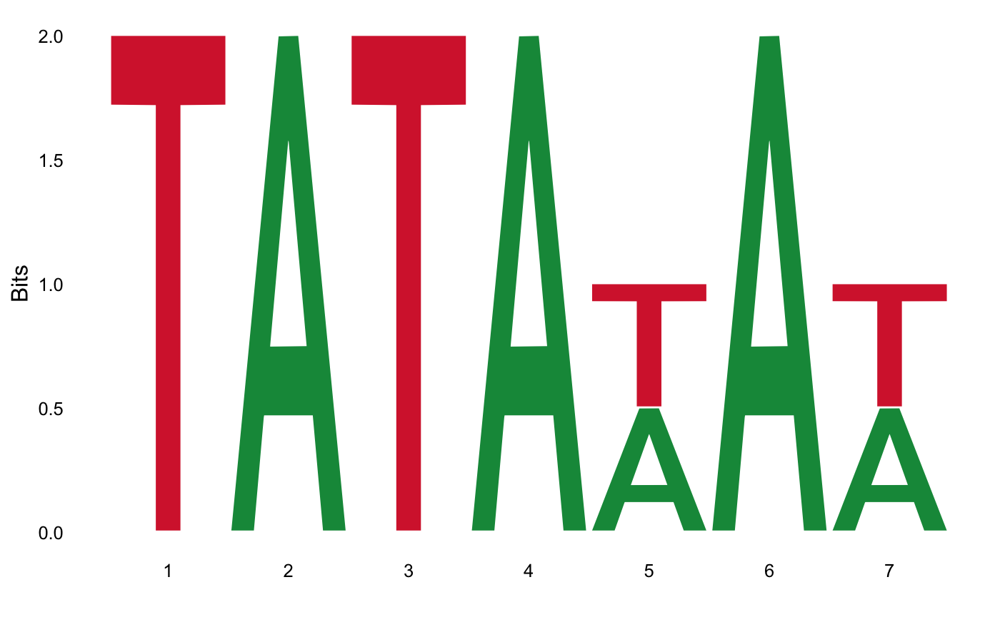

Motif import, export, visualization, and manipulation
Benjamin Tremblay
University of Waterloo, Waterloo, Canadab2tremblay@uwaterloo.ca Source:
R/vignettes/MotifManipulation.Rmd
MotifManipulation.RmdAbstract
Introducing sequence motif types.## Loading required package: BiocGenerics## Loading required package: parallel##
## Attaching package: 'BiocGenerics'## The following objects are masked from 'package:parallel':
##
## clusterApply, clusterApplyLB, clusterCall, clusterEvalQ,
## clusterExport, clusterMap, parApply, parCapply, parLapply,
## parLapplyLB, parRapply, parSapply, parSapplyLB## The following objects are masked from 'package:stats':
##
## IQR, mad, sd, var, xtabs## The following objects are masked from 'package:base':
##
## anyDuplicated, append, as.data.frame, basename, cbind,
## colMeans, colnames, colSums, dirname, do.call, duplicated,
## eval, evalq, Filter, Find, get, grep, grepl, intersect,
## is.unsorted, lapply, lengths, Map, mapply, match, mget, order,
## paste, pmax, pmax.int, pmin, pmin.int, Position, rank, rbind,
## Reduce, rowMeans, rownames, rowSums, sapply, setdiff, sort,
## table, tapply, union, unique, unsplit, which, which.max,
## which.min## Loading required package: S4Vectors## Loading required package: stats4##
## Attaching package: 'S4Vectors'## The following object is masked from 'package:base':
##
## expand.grid## Loading required package: IRanges## Loading required package: Biostrings## Loading required package: XVector##
## Attaching package: 'Biostrings'## The following object is masked from 'package:base':
##
## strsplit## See system.file("LICENSE", package="MotifDb") for use restrictions.The universalmotif class and conversion utilities
The universalmotif class
The universalmotif package stores motifs using the universalmotif class. The most basic universalmotif object exposes the ‘name’, ‘alphabet’, ‘type’, ‘type’, ‘strand’, ‘icscore’, ‘consensus’, and ‘motif’ slots; furthermore, the ‘pseudocount’ and ‘bkg’ slots are also stored but not shown. universalmotif class motifs can be PCM, PPM, PWM, or ICM type.
# library(universalmotif)
data(examplemotif)
examplemotif
#>
#> Motif name: motif
#> Alphabet: DNA
#> Type: PPM
#> Strands: +-
#> Total IC: 14
#> Consensus: TATAWAW
#>
#> T A T A W A W
#> A 0 1 0 1 0.5 1 0.5
#> C 0 0 0 0 0.0 0 0.0
#> G 0 0 0 0 0.0 0 0.0
#> T 1 0 1 0 0.5 0 0.5Exposing the motif class with str shows the other available slots:
#> Formal class 'universalmotif' [package "universalmotif"] with 19 slots
#> ..@ name : chr "motif"
#> ..@ altname : chr(0)
#> ..@ family : chr(0)
#> ..@ organism : chr(0)
#> ..@ motif : num [1:4, 1:7] 0 0 0 1 1 0 0 0 0 0 ...
#> .. ..- attr(*, "dimnames")=List of 2
#> .. .. ..$ : chr [1:4] "A" "C" "G" "T"
#> .. .. ..$ : chr [1:7] "T" "A" "T" "A" ...
#> ..@ alphabet : chr "DNA"
#> ..@ type : chr "PPM"
#> ..@ icscore : num 14
#> ..@ nsites : num(0)
#> ..@ pseudocount: num 0
#> ..@ bkg : num [1:4] 0.25 0.25 0.25 0.25
#> ..@ bkgsites : num(0)
#> ..@ consensus : chr "TATAWAW"
#> ..@ strand : chr "+-"
#> ..@ pval : num(0)
#> ..@ qval : num(0)
#> ..@ eval : num(0)
#> ..@ multifreq : list()
#> ..@ extrainfo : chr(0)The other slots will be shown once filled:
# library(universalmotif)
data(examplemotif)
## The various slots can be accessed individually using `[`
examplemotif["consensus"]
#> consensus
#> "TATAWAW"
## To change a slot, use `[<-`
examplemotif["family"] <- "My motif family"
examplemotif
#>
#> Motif name: motif
#> Family: My motif family
#> Alphabet: DNA
#> Type: PPM
#> Strands: +-
#> Total IC: 14
#> Consensus: TATAWAW
#>
#> T A T A W A W
#> A 0 1 0 1 0.5 1 0.5
#> C 0 0 0 0 0.0 0 0.0
#> G 0 0 0 0 0.0 0 0.0
#> T 1 0 1 0 0.5 0 0.5Though the slots can easily be changed manually with [<-, a number of safeguards have been put in place for some of the slots which will prevent incorrect values from being introduced.
# library(universalmotif)
data(examplemotif)
## The consensus slot is dependent on the motif matrix
examplemotif["consensus"]
#> consensus
#> "TATAWAW"
## Changing this would mean it no longer matches the motif
examplemotif["consensus"] <- "GGGAGAG"
#> Error in .local(x, i, ..., value): consensus string for DNA motifs is generated automatically
## Another example:
examplemotif["strand"] <- "x"
#> Error in validObject(x): invalid class "universalmotif" object: motif 'strand' must be either '+', '-', or '+-'
## Of course, this can be circumvented by simply using `@`; do this at your
## own risk. Trying to use a motif with an incorrectly filled slot will likely
## cause other universalmotif functions to fail.
examplemotif@strand <- "x"
examplemotif
#>
#> Motif name: motif
#> Alphabet: DNA
#> Type: PPM
#> Strands: x
#> Total IC: 14
#> Consensus: TATAWAW
#>
#> T A T A W A W
#> A 0 1 0 1 0.5 1 0.5
#> C 0 0 0 0 0.0 0 0.0
#> G 0 0 0 0 0.0 0 0.0
#> T 1 0 1 0 0.5 0 0.5Below the exposed metadata slots, the actual ‘motif’ matrix is shown. Each position is its’ own column; row names showing the alphabet letters, and the column names showing the consensus letter at each position.
Converting to and from another package’s class
The universalmotif package aims to unify most of the motif-related Bioconductor packages by providing the convert_motif function. This allows for easy transition between supported packages (see ?convert_motif for a complete list of supported packages).
# library(universalmotif)
data(examplemotif)
# data(MA0003.2)
# suppressPackageStartupMessages(library(MotifDb))
## convert from a universalmotif to another
# convert_motifs(examplemotif, "TFBSTools-PWMatrix")
## convert to universalmotif
# convert_motifs(MA0003.2)
## convert between two packages
# convert_motifs(MotifDb[1], "TFBSTools-ICMatrix")The convert_motifs function is embedded in most of the universalmotif functions, meaning that compatible motif classes from other packages can be used without needed to convert them first.
Importing and exporting motifs
Importing
The universalmotif package offers a number of read_ functions to allow for easy import of various motif formats. These include:
read_cisbp: CIS-BP (Weirauch et al. 2014)read_homer: HOMER (Heinz et al. 2010)read_jaspar: JASPAR (Khan et al. 2018)read_meme: MEME (Bailey et al. 2009)read_transfac: TRANSFAC (Wingender et al. 1996)read_uniprobe: UniPROBE (Hume et al. 2015)
These functions should work natively with these formats, but if you are generating your own motifs in one of these formats than it must adhere quite strictly to the format. An example of each of these is included in this package; see system.file("extdata", package="universalmotif").
Additionally, the generic read_matrix function can read simply-formatted motif files; each motif can have a header and a motif matrix.
Exporting
Compatible motif classes can be written to disk using:
write_homerwrite_jasparwrite_matrixwrite_memewrite_transfac
The write_matrix function, similar to its’ read_matrix counterpart, can write motifs as simple matrices with an optional header.
Motif creation
Though universalmotif class motifs can be created using the new constructor, the universalmotif package provides the create_motif function which aims to provide a simpler interface to motif creation. The universalmotif class was designed to work natively with DNA, RNA, and amino acid motifs. Despite this, it can handle any custom alphabet just as easily.
The create_motif function will be introduced briefly here; see ?create_motif for details.
From a PCM/PPM/PWM/ICM matrix
Should you wish to make use of the universalmotif functions starting from a unsupported motif class, you can instead create universalmotif class motifs using the create_motif function.
motif.matrix <- matrix(c(0.7, 0.1, 0.1, 0.1,
0.7, 0.1, 0.1, 0.1,
0.1, 0.7, 0.1, 0.1,
0.1, 0.7, 0.1, 0.1,
0.1, 0.1, 0.7, 0.1,
0.1, 0.1, 0.7, 0.1,
0.1, 0.1, 0.1, 0.7,
0.1, 0.1, 0.1, 0.7), nrow = 4)
motif <- create_motif(motif.matrix, alphabet = "RNA", name = "My motif",
pseudocount = 1, nsites = 20, strand = "+")
## The 'type', 'icscore' and 'consensus' slots will be filled for you
motif
#>
#> Motif name: My motif
#> Alphabet: RNA
#> Type: PPM
#> Strands: +
#> Total IC: 4.676956
#> Consensus: AACCGGUU
#> Target sites: 20
#>
#> A A C C G G U U
#> A 0.7 0.7 0.1 0.1 0.1 0.1 0.1 0.1
#> C 0.1 0.1 0.7 0.7 0.1 0.1 0.1 0.1
#> G 0.1 0.1 0.1 0.1 0.7 0.7 0.1 0.1
#> U 0.1 0.1 0.1 0.1 0.1 0.1 0.7 0.7From sequences or character strings
If all you have is a particular consensus sequence in mind, you can easily create a full motif using create_motif. This can be convenient if you’d like to create a motif to use with an external program such as MEME or HOMER.
motif <- create_motif("CCNSNGG", nsites = 50, pseudocount = 1)
## write_meme(motif, "meme_motif.txt")
motif
#>
#> Motif name: motif
#> Alphabet: DNA
#> Type: PPM
#> Strands: +-
#> Total IC: 8.391796
#> Consensus: CCNSNGG
#> Target sites: 50
#>
#> C C N S N G G
#> A 0.00 0.00 0.25 0.0 0.25 0.00 0.00
#> C 0.99 0.99 0.25 0.5 0.25 0.00 0.00
#> G 0.00 0.00 0.25 0.5 0.25 0.99 0.99
#> T 0.00 0.00 0.25 0.0 0.25 0.00 0.00Generating random motifs
If you wish, it’s easy to generate random motifs:
create_motif()
#>
#> Motif name: motif
#> Alphabet: DNA
#> Type: PPM
#> Strands: +-
#> Total IC: 11.50575
#> Consensus: CAGARWCCGR
#> Target sites: 143
#>
#> C A G A R W C C G R
#> A 0.05 0.62 0.05 0.86 0.49 0.31 0.0 0 0.07 0.48
#> C 0.95 0.25 0.23 0.08 0.00 0.06 0.8 1 0.00 0.00
#> G 0.01 0.00 0.72 0.05 0.33 0.05 0.2 0 0.93 0.52
#> T 0.00 0.13 0.00 0.02 0.18 0.58 0.0 0 0.00 0.00
## You can change the probabilities:
create_motif(bkg = c(0.2, 0.4, 0.2, 0.2))
#>
#> Motif name: motif
#> Alphabet: DNA
#> Type: PPM
#> Strands: +-
#> Total IC: 11.32007
#> Consensus: AWCATCTCCC
#> Target sites: 182
#>
#> A W C A T C T C C C
#> A 0.91 0.56 0.02 0.66 0.30 0.17 0.14 0.00 0.17 0.02
#> C 0.08 0.00 0.95 0.08 0.05 0.75 0.00 0.86 0.58 0.93
#> G 0.00 0.00 0.03 0.26 0.03 0.08 0.00 0.08 0.21 0.05
#> T 0.01 0.44 0.00 0.00 0.62 0.00 0.86 0.06 0.04 0.00
## With a custom alphabet:
create_motif(alphabet = "QWERTY")
#>
#> Motif name: motif
#> Alphabet: QWERTY
#> Type: PPM
#> Total IC: 15.2096
#> Target sites: 159
#>
#> [,1] [,2] [,3] [,4] [,5] [,6] [,7] [,8] [,9] [,10]
#> E 0.00 0.00 0.09 0.74 0.03 0.00 0.04 0.00 0.00 0.00
#> Q 0.03 0.00 0.00 0.18 0.43 0.00 0.00 0.00 0.06 0.73
#> R 0.06 0.00 0.00 0.00 0.00 0.01 0.02 0.11 0.23 0.00
#> T 0.44 0.43 0.90 0.00 0.00 0.43 0.00 0.16 0.00 0.00
#> W 0.47 0.01 0.00 0.00 0.54 0.28 0.00 0.00 0.08 0.00
#> Y 0.00 0.56 0.00 0.08 0.00 0.28 0.95 0.72 0.62 0.27Motif visualization
Motif logos
There are several packages which offer motif visualization capabilities, such as seqLogo, Logolas, Biocpkg("motifStack"), and ggseqlogo. Here I will briefly show how to use these to visualize universalmotif class motifs.
# library(universalmotif)
data(examplemotif)
## For all the examples, simply passing the functions a PPM is sufficient
motif <- convert_type(examplemotif, "PPM")
## Only need the matrix itself
motif <- motif["motif"]
## seqLogo:
seqLogo::seqLogo(motif)
## motifStack:
# motifStack::plotMotifLogo(motif)
## Logolas:
if (requireNamespace("Logolas", quietly = TRUE)) {
colnames(motif) <- seq_len(ncol(motif))
Logolas::logomaker(motif, type = "Logo")
}
#> color_type not provided, so switching to per_row option for
#> color_type
#> frame width not provided, taken to be 1
#> using a background with equal probability for all symbols

The Logolas and ggseqlogo offer many additional options for logo customization, including custom alphabets as well as manually determining the heights of each letter, via the grid and ggplot2 packages respectively.
Session info
#> R version 3.5.1 (2018-07-02)
#> Platform: x86_64-apple-darwin15.6.0 (64-bit)
#> Running under: macOS High Sierra 10.13.4
#>
#> Matrix products: default
#> BLAS: /Library/Frameworks/R.framework/Versions/3.5/Resources/lib/libRblas.0.dylib
#> LAPACK: /Library/Frameworks/R.framework/Versions/3.5/Resources/lib/libRlapack.dylib
#>
#> locale:
#> [1] en_US.UTF-8/en_US.UTF-8/en_US.UTF-8/C/en_US.UTF-8/en_US.UTF-8
#>
#> attached base packages:
#> [1] stats4 parallel stats graphics grDevices utils datasets
#> [8] methods base
#>
#> other attached packages:
#> [1] MotifDb_1.23.0 Biostrings_2.49.1 XVector_0.21.3
#> [4] IRanges_2.15.17 S4Vectors_0.19.19 BiocGenerics_0.27.1
#> [7] universalmotif_0.99.0 BiocStyle_2.9.6 nvimcom_0.9-75
#>
#> loaded via a namespace (and not attached):
#> [1] Biobase_2.41.2 tidyr_0.8.1
#> [3] jsonlite_1.5 gtools_3.8.1
#> [5] Rdpack_0.9-1 assertthat_0.2.0
#> [7] BiocManager_1.30.2 rvcheck_0.1.0
#> [9] GenomeInfoDbData_1.1.0 Rsamtools_1.33.5
#> [11] yaml_2.2.0 pillar_1.3.0
#> [13] backports_1.1.2 lattice_0.20-35
#> [15] glue_1.3.0 digest_0.6.17
#> [17] RColorBrewer_1.1-2 GenomicRanges_1.33.13
#> [19] colorspace_1.3-2 Matrix_1.2-14
#> [21] htmltools_0.3.6 plyr_1.8.4
#> [23] XML_3.98-1.16 pkgconfig_2.0.2
#> [25] bibtex_0.4.2 ggseqlogo_0.1
#> [27] bookdown_0.7 zlibbioc_1.27.0
#> [29] purrr_0.2.5 tidytree_0.1.9
#> [31] scales_1.0.0 processx_3.2.0
#> [33] BiocParallel_1.15.12 tibble_1.4.2
#> [35] ggplot2_3.0.0 SummarizedExperiment_1.11.6
#> [37] lazyeval_0.2.1 splitstackshape_1.4.6
#> [39] magrittr_1.5 crayon_1.3.4
#> [41] memoise_1.1.0 evaluate_0.11
#> [43] ps_1.1.0 fs_1.2.6
#> [45] nlme_3.1-137 MASS_7.3-50
#> [47] xml2_1.2.0 data.table_1.11.4
#> [49] tools_3.5.1 gridBase_0.4-7
#> [51] matrixStats_0.54.0 gbRd_0.4-11
#> [53] stringr_1.3.1 ggtree_1.13.3
#> [55] munsell_0.5.0 DelayedArray_0.7.41
#> [57] bindrcpp_0.2.2 compiler_3.5.1
#> [59] pkgdown_1.1.0.9000 GenomeInfoDb_1.17.1
#> [61] rlang_0.2.2 debugme_1.1.0
#> [63] grid_3.5.1 RCurl_1.95-4.11
#> [65] labeling_0.3 bitops_1.0-6
#> [67] rmarkdown_1.10 Logolas_1.5.1
#> [69] gtable_0.2.0 roxygen2_6.1.0
#> [71] R6_2.2.2 GenomicAlignments_1.17.3
#> [73] seqLogo_1.47.0 knitr_1.20
#> [75] dplyr_0.7.6 rtracklayer_1.41.5
#> [77] bindr_0.1.1 commonmark_1.6
#> [79] rprojroot_1.3-2 treeio_1.5.5
#> [81] desc_1.2.0 ape_5.1
#> [83] stringi_1.2.4 SQUAREM_2017.10-1
#> [85] Rcpp_0.12.18 tidyselect_0.2.4
#> [87] xfun_0.3References
Bailey, T.L., M. Boden, F.A. Buske, M. Frith, C.E. Grant, L. Clementi, J. Ren, W.W. Li, and W.S. Noble. 2009. “MEME Suite: Tools for Motif Discovery and Searching.” Nucleic Acids Research 37: W202–W208.
Heinz, S., C. Benner, N. Spann, E. Bertolino, Y.C. Lin, P. Laslo, J.X. Cheng, C. Murre, H. Singh, and C.K. Glass. 2010. “Simple Combinations of Lineage-Determining Transcription Factors Prime Cis-Regulatory Elements Required for Macrophage and B Cell Identities.” Molecular Cell 38 (4): 576–89.
Hume, M.A., L.A. Barrera, S.S. Gisselbrecht, and M.L. Bulyk. 2015. “UniPROBE, Update 2015: New Tools and Content for the Online Database of Protein-Binding Microarray Data on Protein-Dna Interactions.” Nucleic Acids Research 43: D117–D122.
Khan, A., O. Fornes, A. Stigliani, M. Gheorghe, J.A. Castro-Mondragon, R. van der Lee, A. Bessy, et al. 2018. “JASPAR 2018: Update of the Open-Access Database of Transcription Factor Binding Profiles and Its Web Framework.” Nucleic Acids Research 46 (D1): D260–D266.
Weirauch, M.T., A. Yang, M. Albu, A.G. Cote, A. Montenegro-Montero, P. Drewe, H.S. Najafabadi, et al. 2014. “Determination and Inference of Eukaryotic Transcription Factor Sequence Specificity.” Cell 158 (6): 1431–43.
Wingender, E., P. Dietze, H. Karas, and R. Knuppel. 1996. “TRANSFAC: A Database on Transcription Factors and Their Dna Binding Sites.” Nucleic Acids Research 24 (1): 238–41.